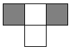
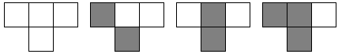
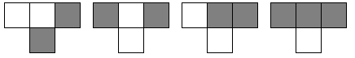
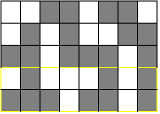
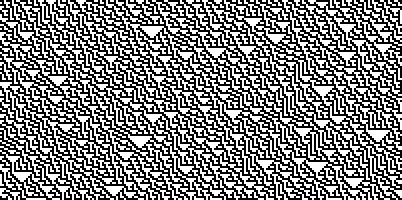

Dans ce sujet, vous ne pouvez pas perdre de points.
Vous devez créer une mosaïque de carreaux noirs et blancs.
Le contenu de chaque rangée de la mosaïque peut être déterminé à partir du contenu de la rangée précédente. Plus précisément, la couleur d'un carreau peut être déterminée à partir de la couleur des trois carreaux se trouvant au-dessus à gauche, juste au-dessus, et au-dessus à droite du carreau.
Par exemple un carreau dont les trois carreaux au-dessus sont, de gauche à droite, noir, blanc et noir, sera toujours blanc. On représente une telle règle de la manière suivante :

Voici l'ensemble des règles de ce type. Les 8 cas possibles sont présentés :


Notez que quand un carreau est à l'extérieur de la grille, on fait comme s'il était blanc.
Les 3 premières lignes de la mosaïque ont déjà été remplies. À vous de remplir les 2 suivantes, en cliquant sur chaque carreau pour les passer du point d'interrogation à blanc, puis noir, puis point d'interrogation, etc. Dès que vous aurez terminé une rangée, vous pourrez voir à côté si vous avez tout juste ou non pour cette rangée, avant de passer à la suivante.
Pour résoudre ce sujet il faut prendre les cases libres une par une de gauche à droite en commençant par la première ligne à trouver. Pour chaque case, on regarde les couleurs des 3 cases juste au dessus, et on recherche le motif correspondant dans l'énoncé, afin de déterminer la couleur de la case. On obtient le résultat décrit ci-dessous.

Si l'on continue à appliquer ces règles sur une grande grille, on obtient une image qui ressemble à ceci :
Les règles décrites dans l'énoncé constituent ce que l'on appelle un automate cellulaire. Il s'agit d'une grille composée de cellules, chaque cellule peut avoir un nombre d'états fini (ici, il y en a deux : noir ou blanc). Des règles définissent l'état d'une cellule. Les automates cellulaires permettent de modéliser beaucoup de choses, dont des phénomènes physiques, ou la circulation sur une autoroute par exemple.
L'ensemble de règles décrit dans l'exercice est connue sous le nom de "Règle 86". Il y a d'autres règles qui donnent des motifs divers et variés, vous pouvez en trouver de nombreux exemples sur cette page.